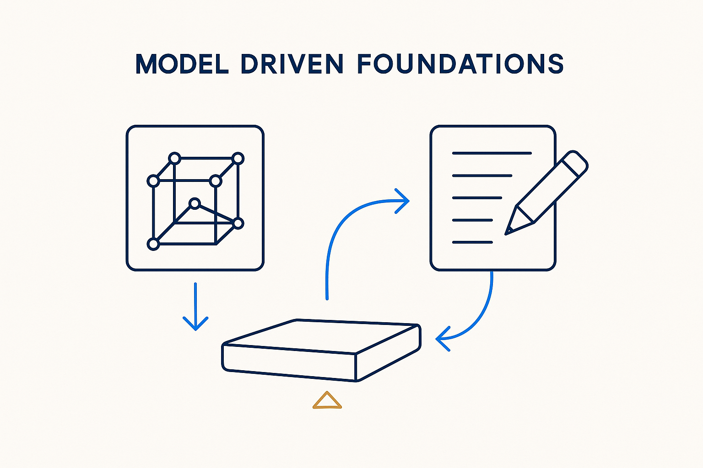

The foundational principles the whole MDDE approach rests on — model as source of truth, derive rather than hand-write.

> The foundational principles the whole MDDE approach rests on — model as source of truth, derive rather than hand-write.
Beneath every MDDE pattern sit a few load-bearing principles. First: the model, not the code, is the source of truth — if code and model disagree, the code is wrong. Second: derive, don't hand-write — anything that can be generated deterministically from the model *should* be, because generated artifacts cannot drift from their source. Third: make metadata executable, so the platform's description and its behavior are the same thing. Everything else in the concept library is these three principles applied to a specific layer.
The foundations matter because they are where implementations quietly fail. Teams adopt a generator but keep hand-patching its output (violating principle one), or generate SQL but hand-write tests and docs (violating principle two) — and within months the platform is model-flavored rather than model-driven. Holding the foundations is what separates Model-Driven Data Engineering as a method from code generation as a tool.
They are also where MDDE joins the wider thesis: structure beats magic. The foundations *are* the structure — and the master line follows from them: the magic isn't in the model, it's in the structure you give it.
Where it lives: the umbrella thesis — the principle layer the rest of the library instantiates.